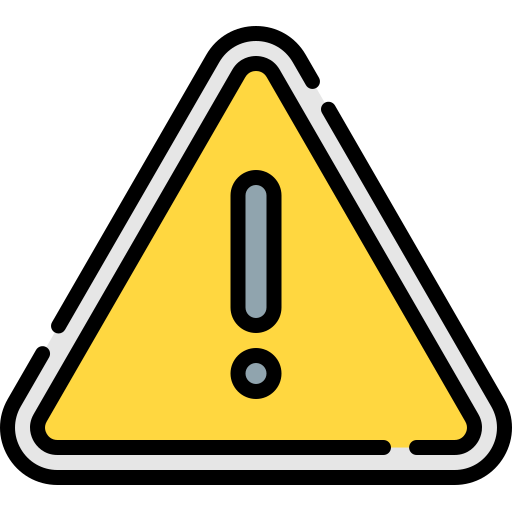

Reporte de Avería Actual
Se ha detectado la siguiente herramienta fuera de servicio:
- ID Herramienta: 103
- Nombre: Sierra circular
- Estado: Averiada (Motor quemado)
- Prioridad de reparación: Alta
Acción requerida: Enviar al taller de reparaciones.

Aquí se muestran las incidencias
Se ha detectado la siguiente herramienta fuera de servicio:
Acción requerida: Enviar al taller de reparaciones.